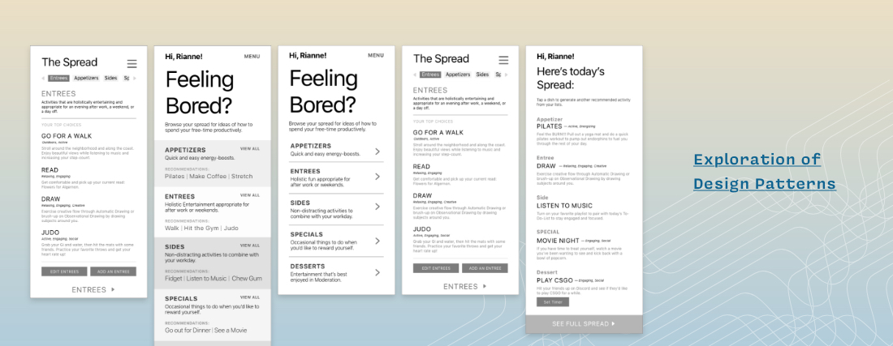
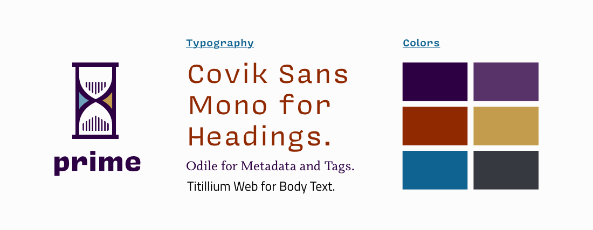
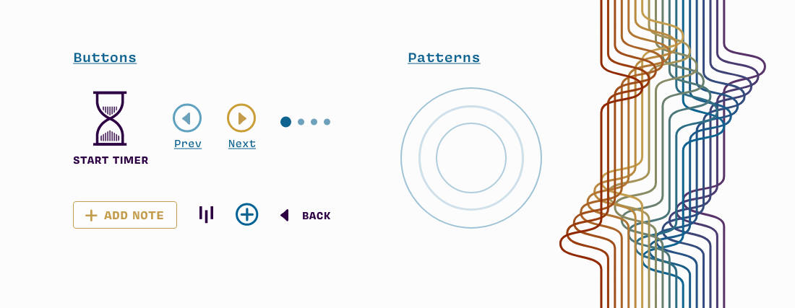

Designing an app for smarter leisure time
ART 249–Interface Design II
For this assignment, I was tasked to create and design a fictitious mobile app. When I thought of what sort of app I’d find useful, I initially leaned towards apps to help with productivity and time management. However, many apps of that sort already existed so I sought to do something different.
Instead, Prime is an app to help users manage their leisure time. It addresses a problem I’m all too familiar with: time lost to bad habits. I’ve tried like others to use my calendar, set timers, or create alarms to create productive leisure time, but the experience often turns resentful when the dreaded alarms go off and I’ve failed to do better with my time.
The goal Prime’s UX/UI design is create a positive experience around leisure-time-assistance so users feel rewarded when using the app and they’re more likely to use Prime again.
Services: UI / UX Design, Frontend Web Branding, Copywriting
Skills: Adobe XD, Illustrator
Conceptual Planning
Design Patterns
The crux of Prime is the user’s ability to frequently view and edit their “Menu.” In conceptual planning, I explored various design patterns of the main interface that featured the Menu and sometimes a suggestion drawn from the Menu. I wanted to find a way to have users easily navigate to different sections of their menu and get recommendations for their day quickly.
LoFi Prototype
The main interface featuring “Your Menu” uses a scroll-up design pattern that allows the user to scroll up to see the rest of their menu items and a horizontal-scrolling-tab-group that lets users peruse categories of their menu with ease.
The main interface also offers suggestions to the user so they may more directly start an activity and log their time. The options are swipe-able because the gesture of swiping left or right for options is natural and easy.
Typographical hierarchy enhances readability so users can make fast decisions.
Branding
 Prime’s branding was partly inspired by a the refined feeling of a wine menu and technology. I chose a wine menu as inspiration to further play with the “Menu” feature of Prime. The inspiration carried over into Prime’s mature color palette and typography which mirrors a wine menu. The technology inspired patterns, buttons, and gradients helps the brand feel current and stylish.